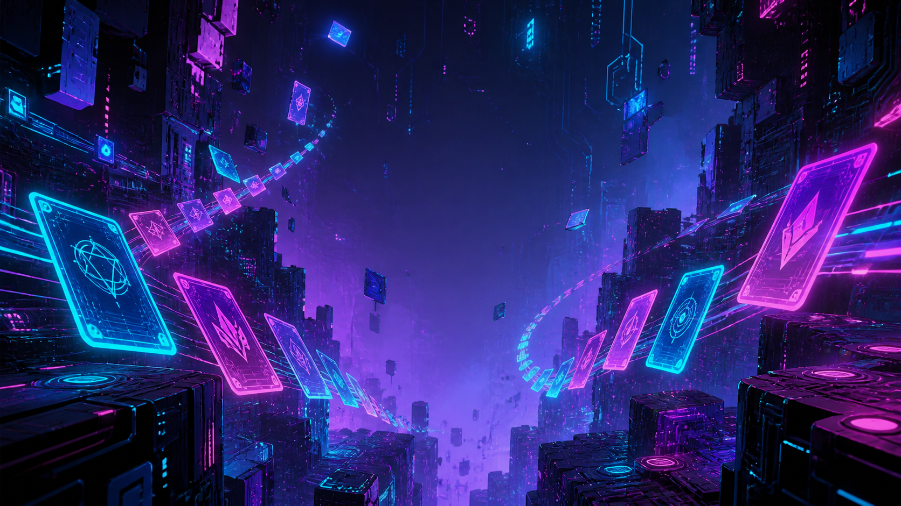
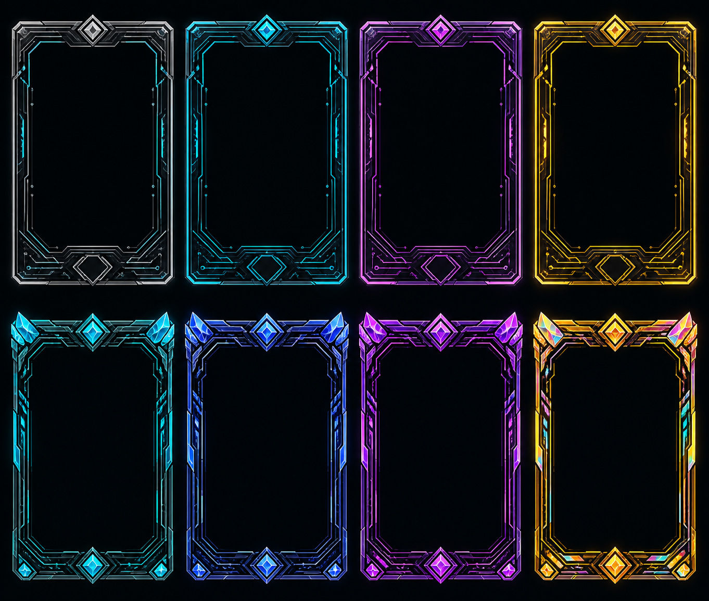
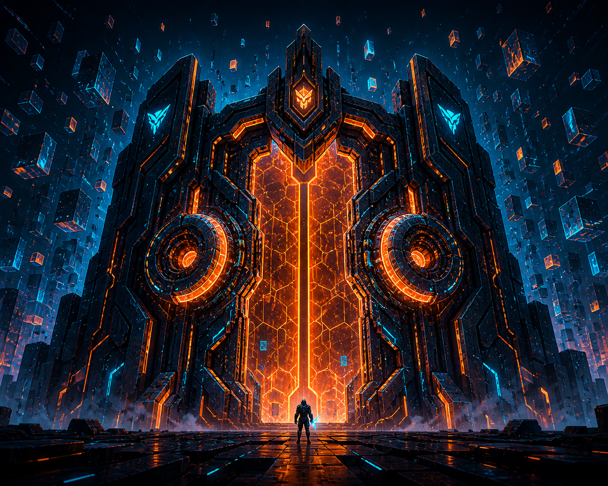
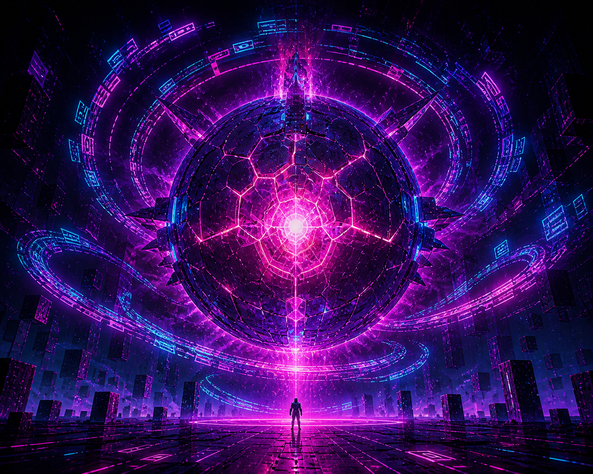

ゲームデザイン文書（GDD）
バージョン 0.2（バトル簡易ルール追記） · 静的公開用HTML
文書情報
| 項目 | 内容 |
|---|---|
| 仮タイトル | リンクコード・ディープラン（Linkcode Deeprun） |
| プラットフォーム | Webブラウザ（GitHub Pages 等の静的ホスティング） |
| ジャンル | デッキ構築ローグライト（超短縮） |
本企画はネット空間・リンク・短時間デュエルといった雰囲気のモチーフに寄せたオリジナル作品である。既存作品の固有名詞・カード名・キャラクターは使用しない。
1. 概要・ワンフレーズ
ネットの深層を数フロア進み、戦闘でデッキを編成しながら最終ボス「コア」の前にたどり着き、一撃の勝負でランを完結させる。

2. 想定プレイ時間
| 指標 | 目標 |
|---|---|
| 1ラン全体 | 8〜10分 |
| 戦闘1回 | 約1〜2分 |
| マップ上のノン戦闘イベント | 各30秒〜1分 |
構造: フロア 3（各フロア終了時にデッキ編成の機会）＋ 最終ボス戦 でラン終了。中ボスは 1体（フロア2終了時またはフロア3直前）を想定し、総戦闘回数は 通常戦4〜6回＋中ボス1＋最終ボス1 程度に抑える。
3. コアピラー（体験の柱）
- 短い意思決定の連続 — ターンが長引かないよう、手札とリソースに上限を設ける。
- シンプルなカードの打ち出し — 現行の バトル（シンプル版） ではタイプ・リンク合成を置かず、EP と与ダメージ中心でまず遊べる形にする。
- 再プレイ性 — カード報酬と経路選択で毎回デッキの形が変わる。MVPではメタ進行なしでも成立するバランスを目指す。
4. ゲームループ
プレイヤーは各フロアで ノードを1つ選択（分岐は 最大2択）。ノード種別に応じて戦闘・ショップ・休息などが発生し、戦闘後は カード報酬 または ゴールド などでデッキが変化する。3フロア目終了後（または設計上マップの終端）で 最終ボス に入る。
flowchart LR
start[RunStart] --> floor[FloorN]
floor --> choice[PathChoice]
choice --> battle[Battle]
choice --> shop[ShopOrRest]
battle --> reward[CardReward]
shop --> floor2[NextFloor]
reward --> floor2
floor2 --> boss[Boss]
boss --> endNode[RunEnd]
5. 戦闘ルール（MVP）
5.1 勝敗条件
- プレイヤーHP と 敵HP。いずれかが 0 以下 で勝敗。
- プレイヤー初期 HP は JSON で定義（例: 80）。
5.2 リソース（EP）
- EP は ターン終了処理のあと に最大まで回復（初期値は
enemy.jsonのepMax）。 - カードの コスト が現在の EP を超える場合はプレイ不可。
5.3 手札・カード（シンプル版）
- リンクゾーン・合成・カードタイプは実装から省略（単純化のため）。
- カードは コスト・与ダメージ（damage）・レア度（見た目）を持つ。データは battle/data/cards.json。
- 開始手札は enemy.json の
starterHandIds。
5.4 ターンの流れ
- プレイヤーは手札をクリックして その場でプレイ（敵 HP を減らす）。
- ターン終了 で敵が
turnDamageだけ反撃 → EP 全快 → 手札をスターターで再構築（デモ用）。
5.5 敵（シンプル版）
ランダム意図 AI は未実装。UI は説明用画像のみ可。
6. カード設計枠（データ上の制約）

| 項目 | MVPの目安 |
|---|---|
| 総カードプール（実装目標） | 25〜35種（現行デモは少数） |
| データ項目（シンプル版） | cost / damage / rarity（タイプ・キーワードは省略可） |
| レア度 | 3段階（コモン / レア / レジェンド）— 出現率のみ差をつけ、効果は派手さに上限 |
| コストレンジ | 0〜4 EP |
7. マップ・進行
7.1 フロア構成
| フロア | 内容（案） |
|---|---|
| 1 | ノード 3〜4。通常戦中心。分岐1回。 |
| 2 | ノード 3〜4。中ボス を1回含む。 |
| 3 | ノード 2〜3。ショップまたは休息を1つ挟み、次で最終ボスへ。 |
7.2 ノード種別（MVP）
| 種別 | 説明 |
|---|---|
| 戦闘 | 雑魚。勝利後 カード3枚から1枚選択 または ゴールド。 |
| エリート | 報酬強め。HP差し引き大きめ。 |
| ショップ | ゴールドで カード購入 / 1枚削除（サーバーに送る）。 |
| 休息 | HPを 30%回復、または 特定タイプのカード1枚を変換（どちらか選択）。 |
| 謎 | ランダム良イベント／小ペナルティ（MVPでは省略可）。 |
8. 敵・ボス
| 役割 | 名前（作中コードネーム） | 概要 |
|---|---|---|
| 雑魚 | スパムワーム / パケットスナッチャー 等 | シルエット小さめ、行動単純。 |
| 中ボス | ファイアウォール | 壁・門のような見た目。防御寄り、意図読みが鍵。 |
| 最終ボス | コア | 球体コアと光。フェーズ 2 のみ（HP閾値で切替）。 |
雑魚（ウイルス系）

中ボス — ファイアウォール

最終ボス — コア

9. 勝利・敗北・計分（MVP）
- 勝利: 最終ボス撃破で ランクリア。表示は クリアタイム と 残りHP のみ（スコア式は v2 検討）。
- 敗北: HP0で ラン終了。リトライはメニューから即座にもう一度。
10. 技術前提
- 静的ファイルのみ（HTML / CSS / JavaScript）。サーバ不要。
- セーブ: localStorage にラン中断データ（任意。MVPでは 中断なし でも可）。
- カード・敵定義は JSON（または JS モジュールの定数）でホールド。
- ビルドツールは 任意（初期はバニラ + モジュールでも可）。
11. スコープ外（v2 以降）
- メタ進行（永続アンロック、難易度上昇）
- 複数キャラ・スターターデッキ差分
- 日替わりデイリー、実績、クラウドランキング
- 多言語対応
12. リスクと対策
| リスク | 対策 |
|---|---|
| 戦闘が単調化 | JSON で damage / turnDamage / epMax を調整。後続で山札・敵パターンを追加。 |
| バランス調整に時間が溶ける | カード枚数と敵種を MVPで絞る。数値は CSVまたはJSON一括 で調整。 |
| 10分超え | フロア数・ノード数・敵HPを データだけで削れる 設計にする。 |
| 版権・ブランド | オリジナル名称のみ。実装・宣伝でも既存IPを連想させる表現を避ける。 |
13. コンセプトアート・プロンプト
各章に差し込んだビジュアルの生成プロンプト（日本語の狙い・英語本文・ネガティブ）は docs/concept-art-prompts.md を参照。画像ファイルは ./assets/concept/ に配置（例: key-visual.png）。PNG が無い場合は同じベース名の SVG が自動で表示されます。